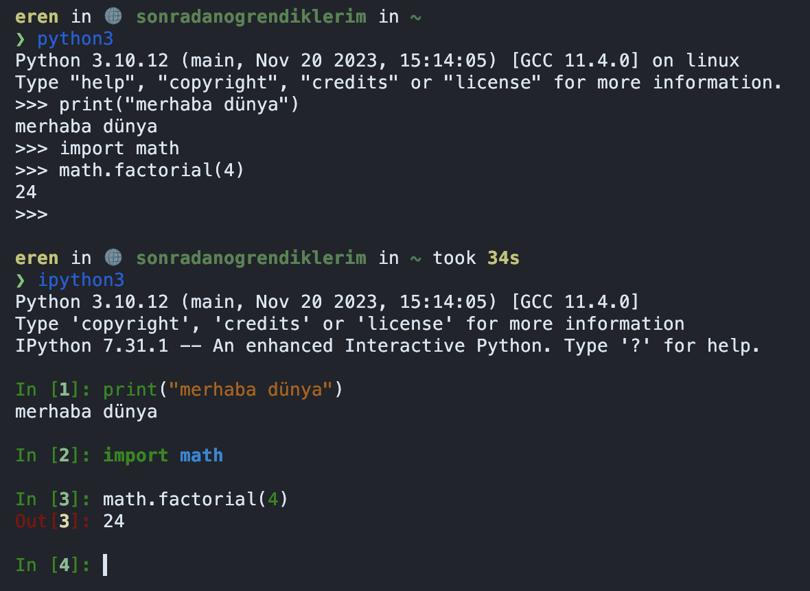

Python ve Modern Geliştirme
Giriş¶
Önceki bölümde programlama dillerinin hangi ihtiyaçtan, nasıl ortaya çıktığına değindik. Python da bunlardan bir tanesi. Bu yazıda Python kurulumu, dile basit bir giriş, modern Python geliştirirken kullanılan araçlar, paket yöneticisi, sanal ortam (virtual environment) gibi konulara değineceğiz.
Buradaki amaç dili öğretmek değil, geliştirme yaparken sektörde sık kullanılan araçları sizlere tanıtmak ve geliştirmenizi kolaylaştırmak. Dili daha fazla öğrenmek isterseniz Python'un wikisi ile birlikte birçok YouTube videosu ve makaleler mevcut.
Burada dikkat etmemiz gereken nokta Python'un da bir program çalıştıran program olduğunu hatırlamak. Programlama dilleri bölümünde dillerin nasıl ortaya çıktığını anladık, Python da bundan farksız değil. Yazdığımız programlar bir başka program (Python) tarafından alınıyor, işleniyor ve sonucunda işlemcinin anlayacağı şekilde 1 ve 0'lara dönüştürülüyor. Bunu yaparken Python bize birçok kolaylık sağlıyor.
Python Kurulumu¶
Önceki yazılarda Ubuntu kullanmamızın yararlı olacağını belirtmiştim. Bundan sonrasında yazacağımız
komutlar her zaman Ubuntu 22.04 üzerinde olacak. Daha önce güzelleştirilmiş
terminalinizi açarak aşağıdaki komutu
girin:
Python yüklendiğinde aşağıdaki çıktıyı görmeniz gerekmekte:
Artık terminalimize python3 komutunu yazarak kullanmaya başlayabiliriz.
Python Kullanımı¶
Terminalimize python3 yazdığımızda fish veya bash ile benzer şekilde metin tabanlı bir arayüz bizi
karşılayacak. Bu arayüze REPL (Read-Eval-Print-Loop) denmekte. Aslında terminal de aynı
şekilde bir REPL, sadece bu ismi şu anda hazır olduğumuz için belgenin bu kısmında duyuyoruz.
Python konsolu içerisine aşağıdaki komutu yazdığınızda programlamaya başlamış oluyoruz:
Görebileceğiniz gibi ekrana çok kolay bir biçimde bir şeyler bastırabildik. Bunu bir önceki bölümde Assembly ile yapmak çok zordu ve hataya açıktı. Buradan anlıyoruz ki diller aslında bizim işimizi kolaylaştırıcı bir araç. Dilerseniz burada bir toplama işlemi tanımlayalım ve ne kadar kolay çağırılabilir olduğunu görelim:
Bunları şimdilik konsolda, interaktif şekilde yaptık ancak muhtemelen kodlarımızın kalıcı olmasını
isteyeceğizdir. Bunun için .py uzantılı bir dosya oluşturup içerisine yazabiliriz. Yeni shell
komutları ile bu dosya ve dizinleri oluşturalım.
- cd: Bunu daha önce terminal makalesinde görmüştük. Bu komut şu anda bulunduğumuz dizini değiştiriyor.
- mkdir:
Make directoryanlamına geliyor. Yeni bir dizin oluşturuyor. - touch: Şef dokunuşu. Boş bir dosya oluşturuyor.
Şimdi grafik arayüzünüzden ev dizininde bulunan src klasörüne giderek ilkadim.py dosyasını metin
editörü ile açın ve içerisine aşağıdakileri yazın:
Sonrasında konsolunuza dönün ve aşağıdaki komutu girin:
Ekrana sadece merhaba dünya bastığını göreceksiniz. Python konsolu ve normal şekilde çalıştırma
arasındaki fark var. Python konsolu bir REPL olduğu için en son yazdığınız komutun çıktısını her
daim ekrana basacaktır ancak normal şekilde çalıştırdığımızda ekranda bir şey görmüyor, sadece
topluyoruz. Ekranda bunu görmek için toplama sonucunu bir değişkene atayıp bastırabiliriz:
Sonucunda tüm programımız şu hali aldı:
print("merhaba dünya")
def topla(a, b):
# burada boşluklar
# önemli
return a + b
toplam = topla(3, 7)
print(toplam)
Tekrar konsola dönüp python3 ilkadim.py çalıştırdığınızda aşağıdaki çıktıyı görmeniz gerekmekte:
Python ve Boşluklar
Dilin yapısı gereği Python'da boşluklar önem arz ediyor. Yukarıdaki kod parçacığını kopyalarken
boşluklara dikkat etmelisiniz. def satırından sonra bir alt satıra geçtiğimizde, bunun def
ile ilgili olduğunu belirtmek için 4 boşluk kullandık. Tek satır olduğundan anlaşılması zor
olabilir ancak birden fazla satır olduğunda anlaşılması daha kolay olacaktır.
Biraz Matematiksel İşlem¶
Toplama işlemi yaptık. Bunu rahatlıkla + operatörü ile yapabiliyoruz ancak faktoriyel hesabı
yapmak istediğimizi varsayalım. Bunun için Python bize kendi içerisinde, dışarıdan yüklemeye ihtiyaç
kalmadan birtakım modüller sunuyor. math modülü bunlardan bir tanesi. Birçok matematiksel
hesap fonksiyonlarını (metodlarını) barındırıyor ve factorial bunlardan bir tanesi. Bu modülü
programımızın başına import anahtar kelimesini kullanarak dahil edebiliyoruz.
Yine önce REPL üzerinden ilerleyip, sonrasında bunu kalıcı olması açısından bir dosyaya yazacağız.
python3 komutu ile REPL'u kullanarak aşağıdaki komutları girin:
Sonuç olarak 24 çıkacaktır. Devamında kodu faktoriyel.py dosyası içerisine yazın ve kaydedin,
python3 faktoriyel.py şeklinde çalıştırın. Oops, ekrana yine bir şeyler yazmayacak. Bunun için
toplama işleminde gördüğümüz gibi print yapmanız gerekecek. İlla ki değişkene atamanız
gerekmeyecek. Çok kısa bir ifade olduğu için aşağıdaki şekilde de kullanabilirsiniz:
REPL ve Kod Tamamlama
Python konsolu içerisinde herhangi bir modülün hangi metodlar barındırdığına nokta karakterinden
sonra TAB tuşuna basarak anlayabilirsiniz. math modülü için math. yazdıktan sonra TAB tuşuna
basarsanız neler barındırdığını görebilirsiniz. Aynı zamanda bu metodların nasıl kullanıldığını
help fonksiyonu ile öğrenebilirsiniz. Örneğin factorial için help(math.factorial) yazmanız
yeterli olacaktır.
Sonuç olarak burada kendi kodumuza ait olmayan bir modülü kullandık. Bu modül Python'un kendi
içerisinde gelen bir modüldü ve dışarıdan modül yüklemedik. Python dili sadece kendi içerisinde
modülleri değil, dışarıdan yükleyeceğimiz modülleri de desteklemekte ve etrafta math modülü gibi
çok çeşitli işler için çok çeşitli modüller var.
Lakin bu modüllerin kullanılmadan önce sistemimize yüklenmesi gerekiyor. Bu modüllerin yüklenmesinin de çeşitli yöntemleri var. Şimdi bunlara bakalım.
Web Sayfası Ziyareti¶
Sadece matematik işlemi değil, Python ile web sayfasına bağlanabilir, oradan veri alablilir, görsel ile ilgili işler yapabilir, yapay zeka ve diğer konularda da kullanabilirsiniz. Yani anlayacağınız Python güçlü bir ekosistemi olan güçlü bir dil.
Bu kısımda sadece bir web sayfasına bağlanıp oradan veri alacağız. Bu veri web sayfasına tarayıcınız
ile bağlanıp kaynak kodunu göster dediğinizde karşınıza gelen veri olacak. Bunun için requests
adlı çok kullanışlı, Python'un kendi içinde olmayan ama dışarıda geliştirilen bir modül
kullanacağız. Öncesinde belirttiğim gibi önce bunu yüklememiz gerekmekte. Terminalimizi açıp
aşağıdaki komutu girerek bu modülü Ubuntu içerisine yükleyebiliriz:
Modül yüklendiğine göre bunu REPL içerisinde import edebilmemiz gerekmekte:
Herhangi bir hata almıyorsanız modül başarılı bir şekilde yüklenmiş demektir. Web sayfasının kaynak
kodlarını almak için requests bize get metodunu sunuyor. Bunu kullanarak kaynak kodlarını alalım:
Bu kod parçacığı bize <Response [200]> objesi dönecek.
Buradaki Response objenin ismi ve
200 HTTP durum kodu anlamına geliyor ama bize sadece dönüş yaptı
ve ekrana bastı. Bunu bir değişkene atayıp içerisindekileri okumamız daha anlamlı olacaktır.
Gördüğümüz gibi response objesi içerisinden text metodunu çağırdık.
Response içerisinde çokça metod var. Bunları yine TAB tamamlama özelliği ile görebilirsiniz.
Elimizdeki çıktı tarayıcıdan gördüğümüz kaynak kodları ile aynı olacak.
Python Konsolunu Güzelleştirelim¶
python3 konsolu yeterli olsa da Fish ve Starship shell'de olduğu gibi daha güzel bir REPL mevcut.
Bunun ismi IPython. Bize renklendirme, daha iyi kod tamamlama, satır sayıları gibi birçok
özellik sunuyor. Ben python3 konsolu kullanmak yerine bunu kullanmayı tercih ediyorum ve sistemime
ilk kurduğum yazılımlar arasında.
Devamında ipython3 komutu ile bu yeni konsolu çalıştırabilirsiniz. Aradaki farkı tek bir görsel
ile görebiliyoruz. IPython'un en sevdiğim yanı renklendirmesi diyebilirim.

Paket Yöneticileri¶
Şimdiye kadar bütün paketleri Ubuntu üzerine yükledik. Bu tek bir proje üzerinde çalışıyorsak mantıklı olabilir ancak birden fazla proje üzerinde çalıştığımızda bütün projelerin ihtiyaç duyduğu paketleri (bağımlılıkları) sistemimize yüklemek pek mantıklı değil. Mantıklı değil çünkü bir projede ihtiyaç duyulan paketin versiyonu ile diğer projenin ihtiyaç duyduğu versiyon farklılık gösterebilir. En kötüsü, her ikisi de çalışırken sistemdeki paket güncellemesi yapıldığında projelerin bozulabilecek olması.
Bunun yerine her projeyi kendi içerisinde izole etmek daha tercih edilen bir yöntem. Bunun için Python'un paket yöneticisi olan pip ve projeleri izole etmek için virtualenv kullanıyoruz.
Pip ve Virtualenv¶
Her proje başladığında yaptığımız öncelikle bir virtualenv oluşturmak olacak. Bunun için proje
dizini içerisinde venv adlı bir dizin kullanılıyor. Bu dizinin ismi ali, sanal gibi herhangi
bir şey olabilir ancak pratik olması açısından sektörde bunu venv ya da gizli olsun istersek
.venv yapıyoruz.
Proje dizini içerisinde bir venv oluşturmakla başlayalım ve yaptığımız örnekleri tekrarlayalım. Artık konsola hakim olduğumuz için dizin oluşturma işlemlerini konsoldan yapacağız:
-p parametresi
Buradaki -p parametresi eğer src dizini öncesinde oluşturulmadıysa bunu da oluştur anlamına
geliyor. mkdir komutu oluşmuş bir dizin içerisinde yeni bir dizin oluşturduğundan, önceki
aşamada src dizini yoksa hata vermemesi açısından kullanılıyor.
Burada Python'un venv modülünü kullanarak (-m venv) ve venv isimli bir dizin ismini son
parametre olarak vererek bize sanal bir ortam oluşturmasını istedik. Ancak bunu istemek, şu an
kullandığımız anlamına gelmiyor. Yalnızca bu proje için oluşturulmuş sanal ortamı aktive etmemiz
gerekmekte. Bunun için konsola aşağıdaki komutu yazın:
Bir önceki bölümlerde terminalimiz fish idi ve fish ile devam ediyoruz. Bu yüzden aktivasyon için
activate.fish kullandık. Eğer bash veya zsh kullanıyorsanız bunu venv/bin/activate şeklinde
değiştirmelisiniz. Sonuç olarak konsolumuz şu hali almış olacak:
Terminalimiz güzelleştiği için venv kullanıp kullanmadığımızı ve hangi Python versiyonu ile kullandığımızı görebiliyoruz. Artık projeye özel sanal ortamdayız ve sadece projeye özel paketler yükleyebiliriz.
Önceki örneğimizde requests yüklemiştik. Bunun için pip ile aşağıdaki komutu girerek yükleyebiliriz:
Bu komut sanal ortamımız aktive olduğundan sadece sanal ortama bunu yükleyecektir. Dikkat ederseniz
paket ismi python3-requests değil, sadece requests çünkü pip ile yüklediğimizde bunun ismi
sadece requests.
Her ortamda farklı paketler olacağı için bu ortam içerisinde şimdilik ipython bulunmuyor. Hatırlarsanız bunu sisteme yüklemiştik ve ismi ipython3 idi. Şimdi bunu yükleyelim. PyPI paket reposu içerisinde bunun ismi sadece ipython. Aşağıdaki komut ile kolayca yükleyebilirsiniz:
Sanal Ortamdan Çıkma¶
İşimiz bittiğinde veya başka bir projeye geçeceğimizde içinde bulunduğumuz sanal ortamdan çıkmamız gerekiyor. Bunun için sadece deactivate komutunu yazmanız yeterli. Bunu yazdıktan sonra konsolunuz aşağıdaki şekilde size geri bildirimde bulunacaktır:
eren in 🌐 sonradanogrendiklerim in ~/src/sonradanogrendiklerim via 🐍 v3.10.12 (venv)
❯ deactivate
eren in 🌐 sonradanogrendiklerim in ~/src/sonradanogrendiklerim
❯
Sonuç¶
Programlama dillerinin ne olduğunu, nasıl ortaya çıktığını az çok anladık. Python'un program çalıştıran program olduğunu, sonuç olarak 1 ve 0'lar ile işlem yaptığımızı gördük. Biraz Python programlamaya, modüllere giriş yaptık ve en önemlisi sektörde çok sık kullanılan virtual environment konusuna değindik.
Umarım bu kulak aşinalığı ilerleyen projelerinizde işinize yarayacaktır. Özellikle virtualenv ve pip kullanmanızı, her projede bu pratiği yapmanızı tavsiye ederim.